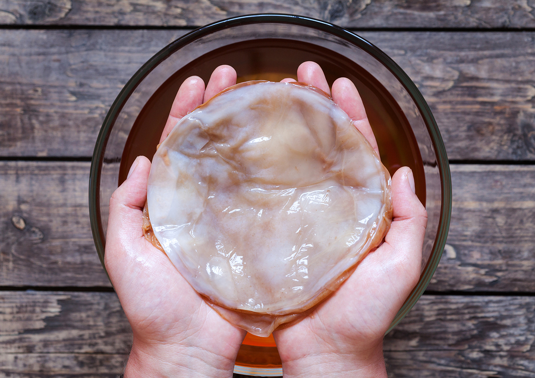
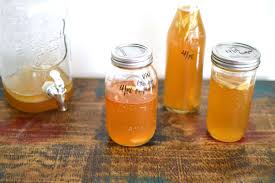
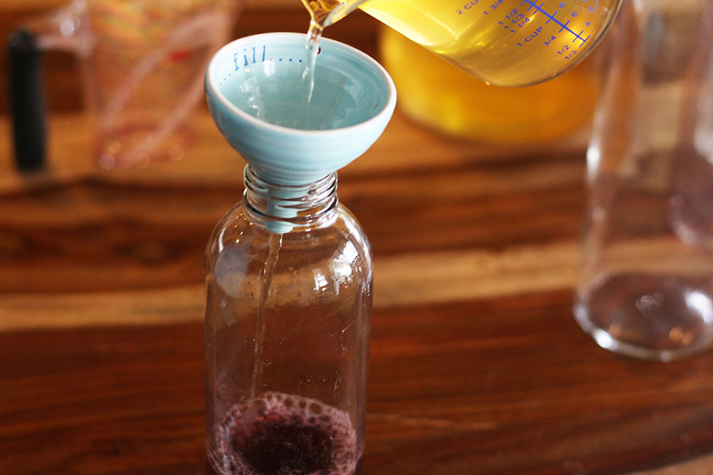

![]()
![]()
![]()
The basic tool kit for fermenting your own kombucha is as follows:
The most popular choice for these things is Amazon. They have a wide array of different fermentation jars, Kombucha starter packs and books to get you going.
The table below outlines a few popular bits and bobs to get you going
![]()
|
Scoby Starter Kit |  |
|
|
Fermentation Jar |  |
|
|
Strainer and Funnel |  |